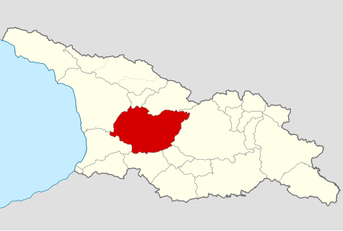

იმერეთი — დასავლეთ საქართველოს ერთ-ერთი ისტორიულ-გეოგრაფიულ მხარე,
ამჟამად იმერეთის მხარის ნაწილი. ვრცელი მნიშვნელობით იგი დასავლეთ საქართველოს ისტორიული სახელწოდებაა, ისევე როგორც ძველი კოლხეთი, ეგრისი, აფხაზეთი.
საკუთრივ იმერეთი შემოსაზღვრულია აღმოსავლეთით შავი ზღვით დასავლეთით ცხენისწყლით, ჩრდილოეთით კავკასიონის ქედით და სამხრეთით ფერსათის, ანუ მესხეთის მთებით. სახელწოდება დაკავშირებულია ამ მხარის მდებარეობასთან, იმერეთი, ანუ ლიხსიქითა მხარე.
იმერეთი იყოფა ორ ნაწილად: ქვემო და ზემო იმერეთად. იმერეთის ტერიტორიაზე აღმოჩენილი არქეოლოგიური ძეგლები ადასტურებს, რომ ამ მხარეში ადამიანს ცხოვრება, ჯერ კიდევ, ქვედა პალეოლითის ხანაში დაუწყია. მათ შორისაა საკაჟიის მღვიმე და ჭახათის (მდ. წყალწითელას ნაპირზე), დევისხვრელის (მდ. ჩხერიმელას ნაპირზე) გამოქვაბულები, სათაფლიის მიდამოები და სხვა. საქალაქო ცხოვრების უძველესი პერიოდის არქეოლოგიური ძეგლები ნაპოვნია ქუთაისში, ვანში, ვარციხეში (როდოპოლისი), შორაპანში და სხვა. მხარის ხელსაყრელი გეოგრაფიული მდებარეობის გამო ამ ქალაქებს ოდითგანვე დიდი სტრატეგიული, ეკონომიკური და პოლიტიკური მნიშვნელობა ჰქონდა.
